2000
The 2000 FIDE World Chess Championship was a significant event as it crowned Vishwanathan Anand as the new World Chess Champion. Below are the details of the match between Vishwanathan Anand and Alexei Shirov:

| Player | Rating | 1 | 2 | 3 | 4 | Points |
|---|---|---|---|---|---|---|
| Alexei Shirov (Spain) | 2746 | ½ | 0 | 0 | 0 | ½ |
| Viswanathan Anand (India) | 2774 | ½ | 1 | 1 | 1 | 3½ |
Background
• Event: FIDE World Chess Championship 2000
• Venue: Tehran, Iran, and New Delhi, India
• Date: November–December 2000
• Format: Knockout tournament format
This championship was held under the FIDE format that used a knockout system, rather than the traditional match format between a reigning champion and a challenger.
---
Finalists
• Vishwanathan Anand (India): Already a strong contender and former challenger for the title (he played against Garry Kasparov in 1995), Anand was widely considered one of the top players of his era.
• Alexei Shirov (Latvia/Spain): Known for his creative and aggressive style, Shirov had defeated Vladimir Kramnik in a 1998 match to earn the right to challenge Garry Kasparov for the Classical World Chess Championship. However, that match never materialized.
---
Final Match Overview
The final match took place in December 2000 in Tehran. Anand convincingly defeated Shirov to claim the title.
• Match Score: Anand won 3.5–0.5 in the four-game final.
• Game 1: Anand won.
• Game 2: Draw.
• Game 3: Anand won.
• Game 4: Anand won.
---
Key Points
1. Anand's Dominance: Anand's play in the tournament was clinical. He demonstrated superior preparation and composure throughout
.
2. Shirov's Struggles: While Shirov is known for his attacking prowess, he failed to bring his best form to the final, possibly due to fatigue or the psychological pressure of playing Anand.
3. Anand Becomes Champion: With this victory, Anand became the first Indian to win the FIDE World Chess Championship, marking a historic moment for Indian chess.
---
Legacy
• This championship established Anand as a global chess icon and a major force in the chess world.
• The title boosted chess's popularity in India, inspiring a new generation of players.
• Although the FIDE title was distinct from the "Classical World Chess Championship" held by Kasparov at the time, Anand's achievement was universally celebrated.
2002
The FIDE World Chess Championship 2002 was a historic event, held under the knockout format by FIDE (the International Chess Federation). The final match took place between two Ukrainian grandmasters, Ruslan Ponomariov and Vassily Ivanchuk, in Moscow, Russia. Below are the full details:
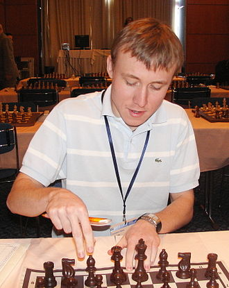
Event Overview:
- Dates: January 16 to February 4, 2002.
- Format: 128-player knockout tournament.
- Location: Moscow, Russia.
- Time Control:
- Classical games: 1 hour 40 minutes for 40 moves, then 50 minutes for 20 moves, and finally 10 minutes for the rest of the game with a 30-second increment per move.
- Rapid tiebreaks: 25 minutes + 10 seconds increment per move.
- Blitz: 5 minutes + 10 seconds increment per move.
---
The Final Match: Ruslan Ponomariov vs. Vassily Ivanchuk
- Dates of the Final Match: January 23 to January 28, 2002.
- Format: Best of 8 classical games.
---
Match Results:
| Player | Rating | 1 | 2 | 3 | 4 | 5 | 6 | 7 | Points |
|---|---|---|---|---|---|---|---|---|---|
| Ruslan Ponomariov | 2684 | ½ | ½ | 1 | ½ | ½ | 1 | ½ | 4½ |
| Vasyl Ivanchuk | 2731 | ½ | ½ | 0 | ½ | ½ | 0 | ½ | 2½ |
Final Score:
- Ruslan Ponomariov: 4.5
- Vassily Ivanchuk: 2.5
Ponomariov won the match and became the FIDE World Chess Champion, the youngest ever at the age of 18 years.
---
Key Highlights:
1. Youngest Champion: Ponomariov made history by becoming the youngest-ever FIDE World Chess Champion.
2. Ivanchuk's Experience: Despite being the more experienced player, Ivanchuk struggled to handle the tactical sharpness and precise calculations of Ponomariov.
3. Innovative Preparation: Ponomariov's preparation, especially in the Sicilian and Grunfeld defenses, played a pivotal role.
4. Ivanchuk's Resilience: While Ivanchuk put up a strong fight, he made critical errors in the decisive games.
---
Legacy:
- Ruslan Ponomariov's victory added his name to the list of world chess champions, but his reign was short-lived as he failed to play in the unification match with Garry Kasparov in 2004 due to organizational issues.
- The match is remembered for its generational clash and Ukraine's dominance in producing chess talents.
2004
World Chess Championship 2004: Rustam Kasimdzhanov vs. Michael Adams
The FIDE World Chess Championship 2004 was held in a knockout format and culminated in a thrilling final between Rustam Kasimdzhanov from Uzbekistan and Michael Adams from England. Below are the key details and highlights of the event.
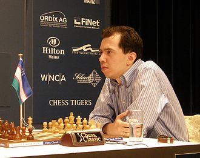
Event Overview
Dates: June 18 – July 13, 2004
Location: Tripoli, Libya
Format: 128-player knockout tournament
Time Control:
Classical games: 90 minutes for the first 40 moves, followed by 30 minutes for the rest of the game, with a 30-second increment per move.
Rapid tiebreaks: 25 minutes + 10 seconds increment per move.
Blitz: 5 minutes + 10 seconds increment per move.
The Final Match: Rustam Kasimdzhanov vs. Michael Adams
Dates of Final Match: July 10 – July 13, 2004
Format: Best of 6 classical games, followed by rapid and blitz tiebreaks if needed.
Match Results:
| Player | Rating | 1 | 2 | 3 | 4 | 5 | 6 | R1 | R2 | Points |
|---|---|---|---|---|---|---|---|---|---|---|
| Michael Adams (ENG) | 2731 | ½ | 0 | 1 | 0 | ½ | ½ | 1 | ½ | 3½ |
| Rustam Kasimdzhanov (UZB) | 2652 | ½ | 1 | 0 | 1 | ½ | ½ | 0 | 1 | 4½ |
Final Score:
Rustam Kasimdzhanov: 1.5 (in tiebreaks)
Michael Adams: 0.5 (in tiebreaks)
Key Highlights
Underdog Victory: Kasimdzhanov was not among the pre-tournament favorites but delivered a remarkable performance, defeating elite players like Veselin Topalov and Vassily Ivanchuk en route to the final.
Adams' Consistency: Michael Adams showcased solid and consistent play throughout the tournament but struggled to gain an edge in the decisive moments of the final.
Rapid Tiebreaks: After six classical games ended in draws, Kasimdzhanov demonstrated superior preparation and nerves in the rapid tiebreaks to secure the title.
Legacy
Rustam Kasimdzhanov's Rise: With this victory, Kasimdzhanov became the FIDE World Chess Champion, marking the pinnacle of his career.
Impact on Chess in Uzbekistan: Kasimdzhanov's win brought global recognition to Uzbek chess and inspired a generation of players in his home country.
Unification Issues: The title was part of the fragmented chess world at the time, as the "Classical World Chess Champion" title was still held by Vladimir Kramnik. Efforts to unify the titles continued in subsequent years.
2005
FIDE World Chess Championship 2005: Veselin Topalov
The FIDE World Chess Championship 2005 was a pivotal moment in chess history, marking the reunification of the chess world under a single governing body. The tournament took place in San Luis, Argentina, and followed an 8-player double round-robin format.
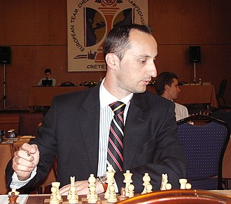
Event Overview
- Dates: September 27 to October 16, 2005
- Venue: Potrero de los Funes, San Luis, Argentina
- Format: Double round-robin (each participant plays two games against every other player, one with white and one with black)
- Time Control: 120 minutes for the first 40 moves, 60 minutes for the next 20 moves, followed by 15 minutes for the rest of the game, with a 30-second increment per move starting from move 61.
---
Participants
| Player Name | Country | Rating | Qualification Path |
| Veselin Topalov | Bulgaria | 2788 | 3rd in FIDE World Ranking |
| Viswanathan Anand | India | 2788 | 2nd in FIDE World Ranking |
| Peter Svidler | Russia | 2738 | Zonal/World Cup |
| Alexander Morozevich | Russia | 2707 | Zonal/World Cup |
| Judit Polgar | Hungary | 2735 | FIDE World Ranking |
| Levon Aronian | Armenia | 2724 | Zonal/World Cup |
| Michael Adams | England | 2719 | Zonal/World Cup |
| Rustam Kasimdzhanov | Uzbekistan | 2685 | FIDE World Champion 2004 |
---
Tournament Highlights
- Veselin Topalov dominated the first half of the tournament, scoring a staggering 6.5/7 in the initial seven rounds, including wins against Anand, Svidler, and Polgar.
- Despite a few draws and a loss in the second half, Topalov's early lead was unassailable.
- Topalov's final score: 10/14, finishing 1.5 points ahead of his closest rivals.
- This was the first tournament under FIDE to declare the World Chess Champion since the split in 1993.
---
Final Standings:
| Rank | Player | Age | Rating | Performance | TOP | ANA | SVI | MOR | LEK | KAS | ADA | POL | Total |
|---|---|---|---|---|---|---|---|---|---|---|---|---|---|
| 1 | Veselin Topalov (Bulgaria) | 30 | 2788 | +102 | - | 1 | ½ | 1½ | 1½ | 1½ | 1½ | 1 | 10 |
| 2 | Viswanathan Anand (India) | 35 | 2788 | +19 | ½ | - | ½ | ½ | 1 | 1 | 1 | 1 | 8 |
| 3 | Peter Svidler (Russia) | 29 | 2788 | +76 | ½ | ½ | - | 1 | 1 | 1 | ½ | 1 | 8½ |
| 4 | Alexander Morozevich (Russia) | 28 | 2707 | +36 | ½ | ½ | 1 | - | 1 | ½ | ½ | 1 | 7 |
| 5 | Peter Leko (Hungary) | 26 | 2763 | -52 | ½ | 0 | ½ | 0 | - | ½ | ½ | 1 | 6½ |
| 6 | Rustam Kasimdzhanov (Uzbekistan) | 25 | 2670 | +2 | ½ | 0 | ½ | ½ | ½ | - | ½ | 0 | 5½ |
| 7 | Michael Adams (England) | 33 | 2719 | -53 | ½ | 0 | ½ | 0 | ½ | ½ | - | ½ | 5 |
| 8 | Judit Polgar (Hungary) | 29 | 2735 | -125 | 0 | 0 | 0 | 0 | 0 | 1 | ½ | - | 4 |
---
Key Moments
1. Topalov's Tactical Brilliance: His aggressive and precise play, combined with deep preparation, overwhelmed his opponents, particularly in the first half.
2. Anand and Svidler's Resurgence: Both finished strong but were unable to close the gap with Topalov.
3. Judit Polgar's Performance: As the only female participant, Polgar faced the world's elite, securing wins against Kasimdzhanov and Adams.
---
Legacy
- Reunification of Chess: Although Topalov became the undisputed FIDE World Champion, this title was still distinct from the "Classical" World Championship held by Vladimir Kramnik.
- Historic Achievement: Topalov's performance was one of the most dominant in modern chess history, securing his place among the greats.
- Impact on Chess: The tournament format and structure inspired subsequent FIDE Championships.
2006
The 2006 World Chess Championship was a pivotal event in chess history,
marking the reunification of the World Chess Championship title after a 13-year split. The match took place in Elista,
Russia, from September 21 to October 13, 2006, between Vladimir Kramnik, the Classical World Champion, and Veselin Topalov,
the reigning FIDE World Champion.

Background
The division of the World Chess Championship began in 1993 when Garry Kasparov and Nigel Short played their match outside
FIDE's jurisdiction,
leading to a schism in the chess world. Between 1993 and 2006, various players held the FIDE title
but were often not recognized as legitimate champions
by the classical chess community. The 2006 match aimed to unify these
titles by having Kramnik defend his title against Topalov23.
Match Format
The championship consisted of 12 classical games. If the score was tied at 6-6 after these games,
a tiebreak consisting of rapid games would determine the winner. The first player to reach 6 points would win the match4.
Results:
| Player | Rating | 1 | 2 | 3 | 4 | 5 | 6 | 7 | 8 | 9 | 10 | 11 | 12 | Points | 13 | 14 | 15 | 16 | Points |
|---|---|---|---|---|---|---|---|---|---|---|---|---|---|---|---|---|---|---|---|
| Veselin Topalov (BUL) | 2813 | 0 | ½ | 1 | 0 | * | 1 | 0 | ½ | 1 | ½ | 1 | 0 | 6 | 0 | 1 | 0 | 1 | 7½ |
| Vladimir Kramnik (RUS) | 2743 | 1 | ½ | 0 | 1 | 1* | 0 | 1 | ½ | 0 | ½ | 0 | 1 | 6 | 1 | 0 | 1 | 0 | 8½ |
Key Events and Controversies
Toiletgate: A significant controversy arose during the match regarding Kramnik's frequent visits to the restroom,
which Topalov's team alleged were
attempts to receive outside assistance. This led FIDE to mandate that both players use a
common bathroom, which Kramnik protested, resulting in
his forfeit of game five when he refused to play under those conditions.
After negotiations, the original bathroom arrangements were reinstated123.
Match Progression:
After an intense series of games, Kramnik and Topalov ended the classical portion of the match with a
tied score of 6-6.
Kramnik had lost game five due to his forfeit but managed to recover by winning crucial games later on 12.
Tiebreaks
The tiebreak consisted of four rapid games with a time control of 25 minutes per side, plus a 10-second increment
per move.
Kramnik won this mini-match decisively, securing his victory with a final score of 8½ to 7½ overall 13.
Conclusion
Kramnik's victory not only made him the undisputed World Chess Champion but also marked the end of a tumultuous period in
chess history characterized by division and controversy. His win was celebrated as a significant step towards restoring unity in
the chess world after years of fragmentation
2007
The World Chess Championship 2007 was a significant event in
the chess world, held in Mexico City from September 12 to September 30, 2007. Here are the full details:
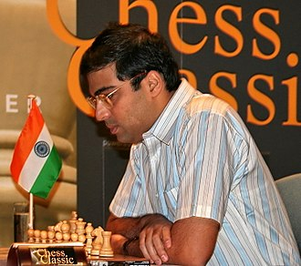
Format and Participants
The championship featured a double round-robin format with eight players:
• Viswanathan Anand (India)
• Vladimir Kramnik (Russia)
• Peter Svidler (Russia)
• Alexander Morozevich (Russia)
• Peter Leko (Hungary)
• Boris Gelfand (Israel)
• Levon Aronian (Armenia)
• Alexander Grischuk (Russia)
Tournament Structure
Each player faced every other player twice, leading to a total of 14 rounds.
The prize fund for the tournament was substantial, totaling $1.3 million.
Results
Viswanathan Anand emerged as the champion, finishing with a total of 9 points, having won four games and drawn ten,
remaining unbeaten throughout the tournament.
Vladimir Kramnik finished second with 8 points, followed by Boris Gelfand in third place.
Final Standings:
| Rank | Player | Rating | ANA | KRA | GEL | LEK | SVI | MOR | ARO | GRI | Points |
|---|---|---|---|---|---|---|---|---|---|---|---|
| 1 | Viswanathan Anand | 2792 | — | ½ | 1 | 1 | 1 | 1 | ½ | 1 | 9 |
| 2 | Vladimir Kramnik | 2769 | ½ | — | ½ | 1 | 1 | 1 | ½ | ½ | 8 |
| 3 | Boris Gelfand | 2733 | 0 | ½ | — | ½ | 1 | ½ | ½ | 1 | 7 |
| 4 | Peter Leko | 2751 | 0 | 0 | ½ | — | 1 | 1 | ½ | ½ | 6½ |
| 5 | Peter Svidler | 2735 | 0 | 0 | 0 | 0 | — | 1 | 1 | 1 | 6 |
| 6 | Alexander Morozevich | 2758 | 0 | 0 | ½ | 0 | 0 | — | 1 | 1 | 6 |
| 7 | Levon Aronian | 2750 | ½ | ½ | ½ | ½ | 0 | 0 | — | 1 | 6 |
| 8 | Alexander Grischuk | 2726 | 0 | ½ | 0 | ½ | 0 | 0 | 0 | — | 5½ |
Key Matches
Anand's victory was solidified with a crucial draw against Peter Leko in the final round, which allowed him to secure the title
without losing any matches.
Throughout the tournament, Anand showcased exceptional skill, defeating notable players like Aronian and Svidler.
Significance
This championship marked Anand's first undisputed world title, as he had previously held the title under different circumstances.
His victory qualified him for a match against Kramnik in 2008, which would further solidify his status in the chess world.
The event was notable not only for its competitive spirit but also for the high level of play displayed by all participants,
reflecting the growing depth of talent in international chess during that period
2008
The 2008 World Chess Championship was a highly anticipated match held in Bonn, Germany,
from October 14 to October 29, 2008. Here are the full details of the event:
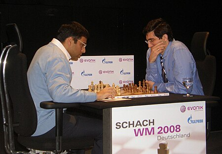
Key Details
Defending Champion: Viswanathan Anand (India)
Challenger: Vladimir Kramnik (Russia)
Format: The match consisted of 12 games, played with a time control of:
120 minutes for the first 40 moves,
60 minutes for the next 20 moves,
15 minutes for the remainder of the game, plus an additional 30 seconds per move from move 61 onwards.
Match Structure
If the match was tied after the 12 games, it would proceed to tie-breaks consisting of two rapid games (5 minutes each with a 10-second increment). If still tied, a sudden-death game would
be played where White had 6 minutes and Black had 5 minutes, with no time increment; in case of a draw, Black would win.
Results
Final Score: Anand won the match with a score of 6.5 to 4.5, securing his title as world champion.
Anand achieved victory by winning three games and drawing eight, while Kramnik managed to win one game.
Final Standings:
| Player | Rating | 1 | 2 | 3 | 4 | 5 | 6 | 7 | 8 | 9 | 10 | 11 | Total |
|---|---|---|---|---|---|---|---|---|---|---|---|---|---|
| Viswanathan Anand | 2783 | ½ | ½ | 1 | 1 | ½ | ½ | 1 | ½ | ½ | ½ | — | 6½ |
| Vladimir Kramnik | 2772 | ½ | ½ | 0 | 0 | ½ | ½ | 0 | ½ | ½ | ½ | — | 4½ |
Breakdown of Games:
Anand won Game 3 and Game 5 with Black pieces in the Semi-Slav defense.
Anand won Game 6 with White pieces using a Nimzo-Indian opening.
Kramnik won Game 10 but could not overcome Anand's lead.
The final game concluded with Anand drawing, solidifying his championship title.
Significance
This championship marked Anand's second consecutive title after he became world champion in 2007 through a tournament format.
The match was notable for its strategic depth and intense psychological battles between two of the world's top players.
Context
Anand had previously defeated Kramnik in their earlier encounters and came into this match with significant preparation,
having switched his opening strategy to counter Kramnik's typical play style.
The event was organized by Universal Event Promotions and sponsored by Evonik Industries and Gazprom.
The victory further established Anand's legacy in chess history as one of the greatest players of all time, as he successfully
defended his title against a formidable opponent.
2010
This section will contain details about the World Chess Championship held in 2010.
The World Chess Championship 2010 was a significant chess event held in Sofia, Bulgaria, from April 24 to May 11, 2010.
Here are the full details:
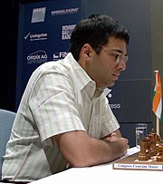
Key Details
Defending Champion: Viswanathan Anand (India)
Challenger: Veselin Topalov (Bulgaria)
Format: The championship consisted of a 12-game match, where the first player to score 6.5 points would be declared the winner.
If the match ended in a tie at 6-6, rapid tiebreak games would be played.
Match Structure
The games followed classical time controls:
120 minutes for the first 40 moves,
60 minutes for the next 20 moves,
15 minutes for the remainder of the game, plus a 30-second increment starting from move 61.
A total prize fund of 2 million Euros was allocated for the match, making it one of the richest in chess history.
Results
Final Score: Anand won the championship with a score of 6.5 to 5.5, successfully defending his title.
Anand won three games, Topalov won one game, and eight games ended in draws.
Breakdown of Games:
| Player | Rating | 1 | 2 | 3 | 4 | 5 | 6 | 7 | 8 | 9 | 10 | 11 | 12 | Total |
|---|---|---|---|---|---|---|---|---|---|---|---|---|---|---|
| Viswanathan Anand (India) | 2787 | 0 | 1 | ½ | 1 | ½ | ½ | ½ | 0 | ½ | ½ | ½ | 1 | 6½ |
| Veselin Topalov (Bulgaria) | 2805 | 1 | 0 | ½ | 0 | ½ | ½ | ½ | 1 | ½ | ½ | ½ | 0 | 5½ |
Anand's victory was clinched in the final game, where Topalov made a critical blunder while seeking complications,
allowing Anand to capitalize and secure the win.
Significance
This championship reinforced Anand's status as one of the leading chess players of his time and marked his fourth world title.
The match was characterized by high-level strategic play and showcased both players' strengths, particularly Anand’s ability to adapt
his opening strategies against Topalov's aggressive style.
Context and Background
The championship was notable for its competitive spirit and was organized under FIDE's regulations.
Anand had previously defeated Kramnik in the World Championship match in 2008 and was looking to defend
his title against Topalov, who had won the championship in 2005.
This match is remembered not only for its intense competition but also for the high-quality chess displayed throughout
the games, making it a highlight in modern chess history.
2012
The World Chess Championship 2012 was a notable event in the chess world, featuring a match
between the reigning champion Viswanathan Anand of India and the challenger Boris Gelfand of Israel. Here are the full
details of the championship:
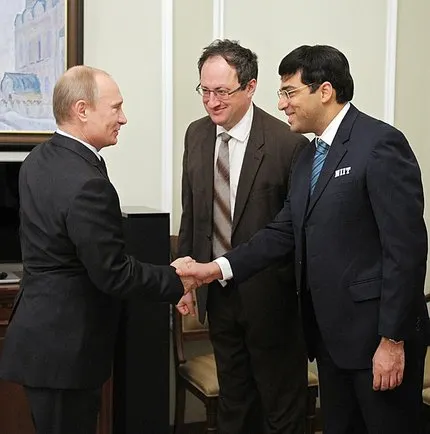
Key Details
Location: Engineering Building of the State Tretyakov Gallery, Moscow, Russia
Dates: May 10 to May 30, 2012
Format: The match consisted of 12 games, with a classical time control of:
120 minutes for the first 40 moves,
60 minutes for the next 20 moves,
15 minutes for the remainder of the game, plus a 30-second increment starting from move 61.
Prize Fund
The total prize fund was approximately $2.55 million, with the winner receiving $1.53 million (60%) and the loser
receiving $1.02 million (40%).
Match Overview
The match began with six draws, leading to a tense atmosphere as both players demonstrated solid defensive play.
In Game 7, Gelfand won after Anand made several inaccuracies, giving Gelfand a commanding position.
Anand retaliated in Game 8, where Gelfand suffered a quick loss due to an error that trapped his queen, marking one of the
shortest losses in World Championship history.
The match continued with four more draws, leading to a tiebreak situation.
Tiebreak Format
If the match ended in a tie at 6-6, the tiebreaks would consist of:
Two rapid games (25 minutes per game with a 10-second increment).
If still tied, two blitz games (5 minutes per game with a 3-second increment).
If necessary, up to five pairs of blitz games could be played before a sudden-death Armageddon game would determine
the winner (White had 5 minutes; Black had 4 minutes, with a 3-second increment starting from move 61).
Final Results:
| Player | Rating | 1 | 2 | 3 | 4 | 5 | 6 | 7 | 8 | 9 | 10 | 11 | 12 | Points | Tie-break | Total |
|---|---|---|---|---|---|---|---|---|---|---|---|---|---|---|---|---|
| Viswanathan Anand | 2791 | ½ | ½ | ½ | ½ | ½ | ½ | 0 | 1 | ½ | ½ | ½ | ½ | 6 | 2½ | 8½ |
| Boris Gelfand | 2727 | ½ | ½ | ½ | ½ | ½ | ½ | 1 | 0 | ½ | ½ | ½ | ½ | 6 | 1½ | 7½ |
Anand successfully defended his title by winning the rapid tiebreaks after finishing the classical games with a score of 6.5 to 5.5.
The final score reflected Anand's resilience and skill in rapid play.
Game Results Summary:
Game 1: Draw
Game 2: Draw
Game 3: Draw
Game 4: Draw
Game 5: Draw
Game 6: Draw
Game 7: Gelfand wins
Game 8: Anand wins
Game 9: Draw
Game 10: Draw
Game 11: Draw
Game 12: Draw
The championship showcased high-level chess and strategic depth, further solidifying Anand's legacy as one of the greatest
chess players in history.
2013
The World Chess Championship 2013 was a significant event in the chess world, featuring a match between the defending
champion Viswanathan Anand and the challenger Magnus Carlsen. Here are the full details:
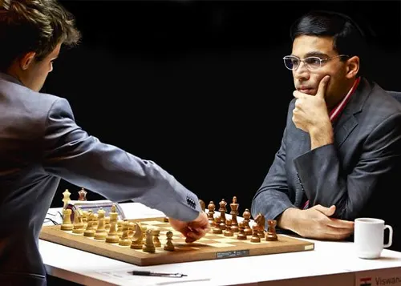
Key Details
Location: Hyatt Regency, Chennai, India
Dates: November 9 to November 22, 2013
Format: The championship consisted of a 12-game match, with a classical time control of:
120 minutes for the first 40 moves,
60 minutes for the next 20 moves,
15 minutes for the remainder of the game, plus a 30-second increment starting from move 61.
Prize Fund
The total prize fund was approximately $2 million, with the winner receiving $1.2 million and the runner-up receiving $800,000.
Match Overview
Magnus Carlsen entered the match as the world's highest-rated player and was widely regarded as a favorite.
The match began with two quick draws in the first two games.
Carlsen secured his first victory in Game 5, showcasing his aggressive style and tactical prowess.
Over the course of the match, Carlsen won three games and drew seven, leading to a final score of 6.5 to 3.5.
Final standings:
| Rating | Game 1 9 Nov. |
Game 2 10 Nov. |
Game 3 12 Nov. |
Game 4 13 Nov. |
Game 5 15 Nov. |
Game 6 16 Nov. |
Game 7 18 Nov. |
Game 8 19 Nov. |
Game 9 21 Nov. |
Game 10 22 Nov. |
Game 11 24 Nov. |
Game 12 26 Nov. |
Points |
|---|---|---|---|---|---|---|---|---|---|---|---|---|---|
| 2775 Viswanathan Anand (India) |
½ | ½ | ½ | ½ | 0 | 0 | ½ | ½ | 0 | ½ | Not required | Not required | 3½ |
| 2870 Magnus Carlsen (Norway) |
½ | ½ | ½ | ½ | 1 | 1 | ½ | ½ | 1 | ½ | Not required | Not required | 6½ |
Game Results Summary:
Game 1: Draw
Game 2: Draw
Game 3: Draw
Game 4: Draw
Game 5: Carlsen wins
Game 6: Draw
Game 7: Carlsen wins
Game 8: Draw
Game 9: Carlsen wins
Game 10: Draw
Carlsen's victory in Game 5 was particularly notable as it marked a turning point in the match, giving him momentum that he maintained
throughout.
Significance of the Match
Magnus Carlsen became the youngest World Chess Champion at the age of 22, defeating Anand decisively.
The match was significant not only for its competitive nature but also for its impact on chess popularity, especially in India,
where Anand is a national icon.
The event attracted significant media attention and set records for viewership, highlighting the growing interest in chess as a
spectator sport.
Closing Ceremony
The closing ceremony took place on November 25, where Magnus Carlsen was awarded the championship trophy by Tamil Nadu Chief Minister
J Jayalalitha.
Anand received recognition for his contributions to chess and his status as a former champion.
The championship marked a new era in chess, with Carlsen's ascendance signaling a shift in dominance within the sport. His style
of play and strategic innovations have influenced many players and contributed to his ongoing success in subsequent championships.
2014
The World Chess Championship 2014 was a highly anticipated rematch between reigning
champion
Magnus Carlsen and former champion Viswanathan Anand. Here are the full details of the event:
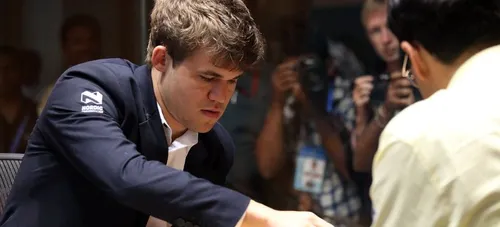
Key Details
Location: Sochi, Russia
Dates: November 7 to November 28, 2014
Format: The championship consisted of a 12-game match, with a classical time control of:
120 minutes for the first 40 moves,
60 minutes for the next 20 moves,
15 minutes for the remainder of the game, plus a 30-second increment starting from move 61.
Prize Fund
The total prize fund was approximately $1.5 million, with the winner receiving $1 million and the runner-up receiving
$500,000.
Match Overview
The match began on November 8, 2014, with an opening ceremony attended by notable figures, including Russian President
Vladimir Putin.
Carlsen entered the match as the defending champion after winning against Anand in 2013 and was favored to retain his title.
The first game ended in a draw, setting a competitive tone for the match.
Carlsen took the lead in Game 2 and maintained it throughout the match, ultimately winning Game 11 to secure his title.
Results:
| Player | Rating | Games | Points | ||||||||||
|---|---|---|---|---|---|---|---|---|---|---|---|---|---|
| Game 1 8 Nov |
Game 2 9 Nov |
Game 3 11 Nov |
Game 4 12 Nov |
Game 5 14 Nov |
Game 6 15 Nov |
Game 7 17 Nov |
Game 8 18 Nov |
Game 9 20 Nov |
Game 10 21 Nov |
Game 11 23 Nov |
|||
| Magnus Carlsen (Norway) | 2863 | ½ | 1 | ½ | 0 | 1 | ½ | ½ | 1 | ½ | ½ | Not required | 6½ |
| Viswanathan Anand (India) | 2792 | ½ | 0 | ½ | 1 | 0 | ½ | ½ | 0 | ½ | ½ | Not required | 4½ |
2016
The World Chess Championship 2016 was a highly competitive match held in New York City,
featuring reigning champion Magnus Carlsen defending his title against challenger Sergey Karjakin. Here are the full
details of the event:
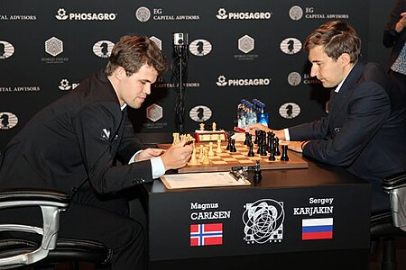
Key Details
Location: New York City, USA
Dates: November 11 to December 2, 2016
Format: The match consisted of a 12-game series, with the first player to reach 6.5 points declared the winner.
If tied at 6-6, the championship would go to tiebreaks consisting of rapid games.
Prize Fund
The total prize fund for the championship was approximately $1.1 million, with the winner receiving a larger share.
Match Overview
The match started with high expectations as both players were among the best in the world.
Carlsen and Karjakin played a series of closely contested games, with several ending in draws.
Karjakin took the lead in Game 8, marking a significant moment as it was his first win of the match, putting him ahead with
a score of 4-3.
Carlsen managed to equalize in Game 10, showcasing his resilience and ability to perform under pressure.
Results:
| Game | Date | Result | Winner | Moves |
|---|---|---|---|---|
| 1 | 11 Nov 2016 | ½ - ½ | Draw | 42 |
| 2 | 12 Nov 2016 | ½ - ½ | Draw | 33 |
| 3 | 14 Nov 2016 | ½ - ½ | Draw | 78 |
| 4 | 15 Nov 2016 | ½ - ½ | Draw | 94 |
| 5 | 17 Nov 2016 | ½ - ½ | Draw | 51 |
| 6 | 18 Nov 2016 | ½ - ½ | Draw | 32 |
| 7 | 20 Nov 2016 | ½ - ½ | Draw | 33 |
| 8 | 21 Nov 2016 | 0 - 1 | Sergey Karjakin | 52 |
| 9 | 23 Nov 2016 | ½ - ½ | Draw | 72 |
| 10 | 24 Nov 2016 | 1 - 0 | Magnus Carlsen | 75 |
| 11 | 26 Nov 2016 | ½ - ½ | Draw | 34 |
| 12 | 28 Nov 2016 | ½ - ½ | Draw | 30 |
| Classical Games Final Score: 6 - 6 | ||||
| 13 (Rapid) | 30 Nov 2016 | ½ - ½ | Draw | 37 |
| 14 (Rapid) | 30 Nov 2016 | ½ - ½ | Draw | 84 |
| 15 (Rapid) | 30 Nov 2016 | 1 - 0 | Magnus Carlsen | 38 |
| 16 (Rapid) | 30 Nov 2016 | 1 - 0 | Magnus Carlsen | 50 |
| Rapid Tie-breaks Final Score: 3 - 1 | ||||
| Magnus Carlsen retains the World Chess Championship title | ||||
Game Results Summary:
Game 1: Draw
Game 2: Draw
Game 3: Draw
Game 4: Draw
Game 5: Draw
Game 6: Draw
Game 7: Draw
Game 8: Karjakin wins
Game 9: Draw
Game 10: Carlsen wins
Game 11: Draw
Game 12: Draw (leading to tiebreaks)
Tiebreaks
The match ended in a tie after the classical games, leading to rapid tiebreaks
.
In the rapid tiebreaks, Carlsen won two out of four games played, successfully defending his title.
Tiebreak Summary:
Tiebreak Game 1: Draw
Tiebreak Game 2: Draw
Tiebreak Game 3: Carlsen wins
Tiebreak Game 4: Carlsen wins
Carlsen's victory in the tiebreaks solidified his status as one of the greatest chess players in history.
Significance of the Match
The championship was notable for its intensity and the high level of play exhibited by both competitors.
Carlsen's ability to come back from a deficit and win in rapid tiebreaks demonstrated his exceptional skills and mental fortitude.
This match further elevated Carlsen's legacy as he retained his title for a second consecutive time.
The World Chess Championship 2016 is remembered not only for its competitive nature but also for its dramatic moments, including
Karjakin's strong performance and Carlsen's eventual triumph under pressure.
2018
The World Chess Championship 2018 was a highly anticipated match held in London, featuring reigning champion
Magnus Carlsen defending his title against challenger Fabiano Caruana. Here are the full details of the event:
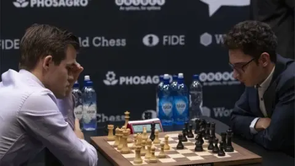
Key Details
Location: The College, Holborn, London, UK
Dates: November 9 to November 28, 2018
Format: The championship consisted of a 12-game match, with the first player to reach 6.5 points declared the winner.
If tied at 6-6, rapid tiebreak games would be played.
Prize Fund
The total prize fund was approximately $1.14 million, with the winner receiving a larger share.
Match Overview
The match began with high expectations as both players were among the best in the world. Carlsen was the reigning champion
since 2013 and entered the match as the favorite.
All 12 classical games ended in draws, marking a historic moment as it was the first time in World
Championship history that all classical games were drawn.
Result:
| Name | Rating | Match games | Points | |||||||||||
|---|---|---|---|---|---|---|---|---|---|---|---|---|---|---|
| Magnus Carlsen (NOR) | 2835 | ½ | ½ | ½ | ½ | ½ | ½ | ½ | ½ | ½ | ½ | ½ | ½ | 6 |
| Fabiano Caruana (USA) | 2832 | ½ | ½ | ½ | ½ | ½ | ½ | ½ | ½ | ½ | ½ | ½ | ½ | 6 |
Game Results Summary:
Game 1: Draw (lasting over 7 hours)
Game 2: Draw
Game 3: Draw
Game 4: Draw
Game 5: Draw
Game 6: Draw
Game 7: Draw
Game 8: Draw
Game 9: Draw
Game 10: Draw
Game 11: Draw
Game 12: Draw
Tiebreaks
On November 28, rapid tiebreak games were played to determine the champion.
Magnus Carlsen won all three rapid games against Fabiano Caruana, securing his title with a score of 3-0 in the tiebreak.
Tiebreak Summary:
Tiebreak Game 1: Carlsen wins
Tiebreak Game 2: Carlsen wins
Tiebreak Game 3: Carlsen wins
Carlsen's victory solidified his status as one of the greatest chess players in history and marked his fourth consecutive
title defense.
Significance of the Match
This championship highlighted both players' exceptional skills and strategies, with Carlsen demonstrating resilience
and tactical prowess.
The event attracted significant media attention and was viewed by millions worldwide, further popularizing chess as a competitive sport.
The World Chess Championship 2018 is remembered for its intense competition and the remarkable achievement of having all
classical games end in draws, followed by Carlsen's decisive victory in rapid tiebreaks.
2021
The World Chess Championship 2021 was a highly anticipated event featuring reigning champion Magnus Carlsen
defending his title against challenger Ian Nepomniachtchi. Here are the full details of the championship:
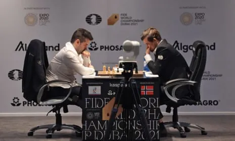
Key Details
Location: Dubai, UAE (held alongside the World Expo)
Dates: November 24 to December 16, 2021
Format: The championship consisted of a match of 14 classical games, with the first player to reach 7.5
points declared the winner. If tied at 6-6, rapid tiebreak games would be played.
Prize Fund
The total prize fund was approximately €2 million, with the winner receiving €1.2 million and the runner-up receiving €800,000.
Match Overview
The match began on November 24, 2021, after being postponed from its original schedule in December 2020 due to the COVID-19 pandemic.
Carlsen entered the match as the favorite, holding an Elo rating of 2856, while Nepomniachtchi was ranked fifth.
Game Results Summary:
Game 1: Draw
Game 2: Draw
Game 3: Draw
Game 4: Draw
Game 5: Draw
Game 6: Carlsen wins (Longest game in World Championship history, lasting 136 moves)
Game 7: Draw
Game 8: Carlsen wins
Game 9: Nepomniachtchi wins
Game 10: Draw
Game 11: Carlsen wins
Game 12: Carlsen wins
Carlsen ultimately won the match with a score of 7.5 to 3.5, successfully defending his title for a fifth time.
Tiebreaks
No tiebreaks were necessary as Carlsen secured enough points during the classical games.
Notable Moments:
The sixth game was particularly significant as it marked the longest game in World Championship history,
lasting nearly 8 hours and showcasing deep strategic play.
Carlsen's victory in this match further solidified his legacy as one of the greatest chess players in history.
Significance of the Match
This championship highlighted both players' exceptional skills and was watched by millions worldwide,
further popularizing chess as a competitive sport.
Carlsen's performance demonstrated his ability to perform under pressure and adapt his strategies effectively throughout the match.
The World Chess Championship 2021 is remembered for its high level of play and the dramatic moments that unfolded over its course,
culminating in Carlsen's decisive victory against Nepomniachtchi.
2023
The World Chess Championship 2023 featured a thrilling final match between Ian Nepomniachtchi and Ding Liren.
Here are the full details of the championship:
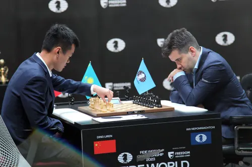
Key Details
Location: Astana, Kazakhstan
Dates: April 7 to April 30, 2023
Format: The championship consisted of a 14-game match, with the first player to reach 7.5 points declared the winner. If tied at 7-7, rapid tiebreak games would be played.
Prize Fund
The total prize fund was approximately €2 million, with the winner receiving a larger share.
Match Overview
The match was highly competitive, showcasing both players' exceptional skills.
After 14 classical games, the match ended in a tie at 7-7, leading to rapid tiebreak games to determine the champion.
Game Results Summary:
Game 1: Draw
Game 2: Draw
Game 3: Draw
Game 4: Draw
Game 5: Ding wins
Game 6: Draw
Game 7: Nepomniachtchi wins
Game 8: Draw
Game 9: Ding wins
Game 10: Draw
Game 11: Nepomniachtchi wins
Game 12: Draw
Game 13: Draw
Game 14: Draw
Tiebreaks
In the rapid tiebreaks, Ding Liren emerged victorious against Nepomniachtchi, winning with a score of 2-0 in the
final rapid games after the classical games ended in a tie.
Tiebreak Summary:
Tiebreak Game 1: Ding wins
Tiebreak Game 2: Ding wins
Ding's victory marked a significant moment in chess history as he became the 17th World Chess Champion, ending Carlsen's
reign since 2013.
Significance of the Match
This championship was notable for its high level of play and strategic depth, showcasing both players' abilities under
pressure.
Ding Liren's victory not only earned him the title but also a prize of approximately €1.1 million, while Nepomniachtchi received €900,000.
The event attracted significant media attention and highlighted the growing popularity of chess globally.
The World Chess Championship 2023 is remembered for its intense competition and Ding Liren's decisive victory over
Ian Nepomniachtchi in the rapid tiebreaks, solidifying his place in chess history.
2024
In the 2024 FIDE World Chess Championship, D. Gukesh emerged victorious, defeating Ding
Liren to become the youngest World Champion in history. The match concluded on December 12, 2024, after a tense 14-game
series, with Gukesh securing the title in the final game. Here are the full details of the championship:
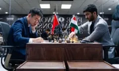
Match Overview:
Location: Singapore, at Resorts World Sentosa
Dates: November 25 to December 13, 2024
Format: Best of 14 games, with the first player to reach 7.5 points declared the winner.
Final Results:
Final Score: Gukesh 7.5 - 6.5 Ding Liren
Games Breakdown:
Game 1: Ding Liren 1 - 0 Gukesh
Game 2: Ding Liren 0.5 - 0.5 Gukesh
Game 3: Gukesh 1 - 0 Ding Liren
Game 4: Ding Liren 0.5 - 0.5 Gukesh
Game 5: Ding Liren 0.5 - 0.5 Gukesh
Game 6: Ding Liren 0.5 - 0.5 Gukesh
Game 7: Ding Liren 0.5 - 0.5 Gukesh
Game 8: Ding Liren 0.5 - 0.5 Gukesh
Game 9: Ding Liren 0.5 - 0.5 Gukesh
Game 10: Ding Liren 0.5 - 0.5 Gukesh
Game 11: Gukesh 1 - 0 Ding Liren
Game 12: Ding Liren 1 - 0 Gukesh
Game 13: Ding Liren 0.5 - 0.5 Gukesh
Game 14: Gukesh 1 - 0 Ding Liren
Key Highlights:
Gukesh became the youngest World Champion at 18 years old.
The match featured a total of 14 games, with several drawn games leading to a tense finish.
Ding Liren initially led the match but Gukesh's resilience and strategic play allowed him to clinch the title in the final game.
Prize Money:
Gukesh received a prize of USD 1.35 million for winning the championship.
Ding Liren received USD 1.15 million as the runner-up.
Broadcasting:
The championship was broadcast live on FIDE's official channels, including YouTube and Twitch, allowing fans worldwide to
follow the action.
This championship not only marked a significant achievement for Gukesh but also highlighted the evolving landscape of chess,
with younger players making their mark on the world stage.